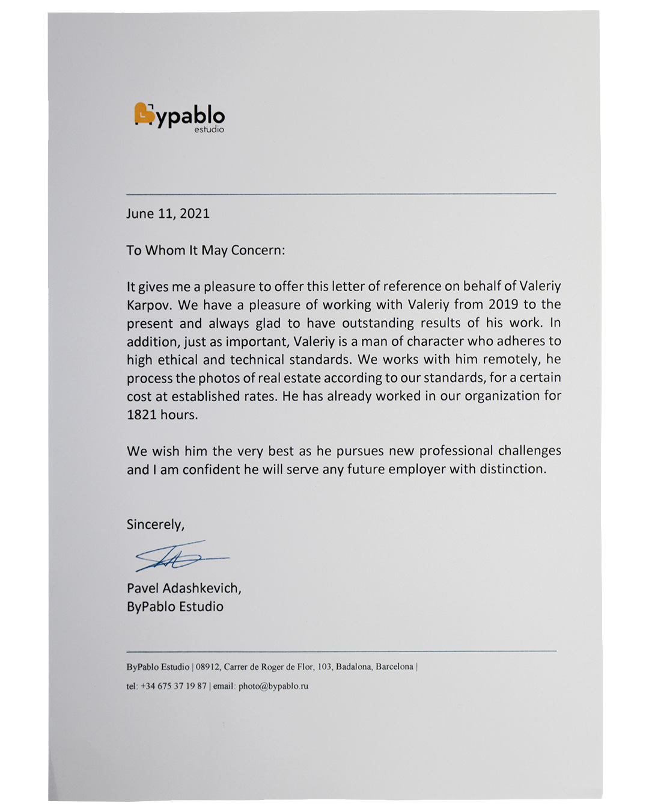
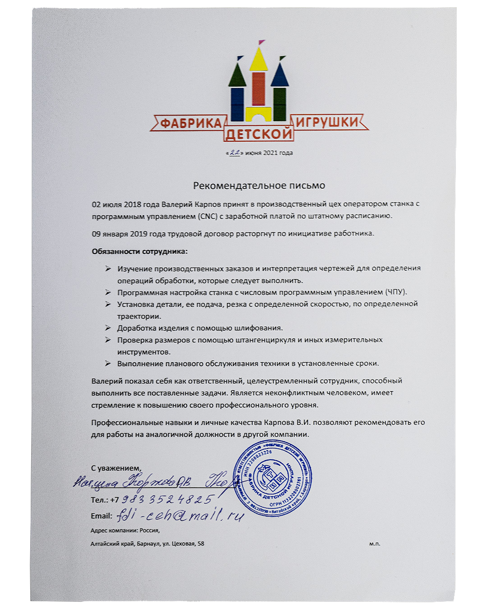
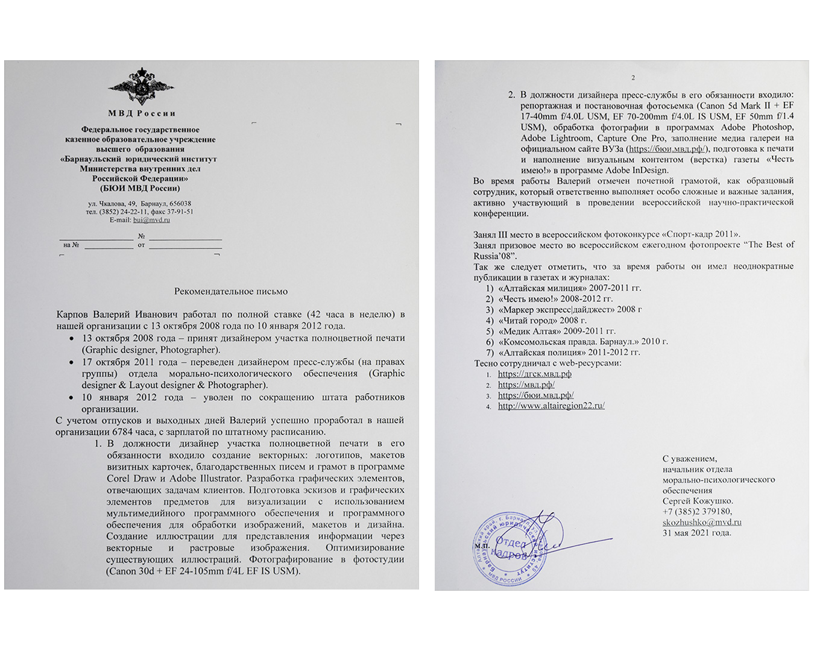

Меня зовут Валерий и в настоящий момент я ищу работу.
Расскажу немного о себе.
Учился в школе с углубленным изучением английского языка.
Увлёкся программированием в 8-ом класе. Начал изучать Turbo Pascal 7.0 и Borland Delphi.
Достиг неплохих результатов заняв второе место на краевом конкурсе посвященному програмированию.
Сразу после школы поехал в Московский вуз МГИК на отделение прикладной информатики (в менеджменте).
Закончил очное отделение по специализации "мультимедийные технологии и web-дизайн".
После Вуза стал работать дизайнером полноцветной печати в структурах МВД РФ.
Работая дизайнером увлекся фотографией и в 2008 году занял призовое место во всероссийском ежегодном фотопроекте The Best of Russia '08.
Начал осваивать InDesign и стал художественным редактором газеты Медик Алтая
создал ей обложку, верстал 16 полос материала, в то же время фотографируя для заполнения статей с различных мероприятий.
Поработав редактором газеты в г. Барнауле, решил фотографировать мероприятия в клубах и светских вечеринок г. Новосибирска, работал сразу на нескольких порталах одновременно, делал качественные фотографии людей.
В 2017 году Вернулся к программированию и стал главным дизайнером web-сайта, одной молодой, но стремительно развивающейся, на тот момент, компании. Кстати, благодаря сайту прибыль компании выросла примерно на 150%.
В 2018 году начал попробовать себя совсем в другой сфере и устроился на работу оператором станка с программным управлением (но она не совсем чтоб была далекой от творчества, ведь я создавал дизайн-макеты детских игрушек, и вырезал их на станке, для которого написал исполняемые файлы).
В это же время стал осваивать 3DsMax и создавать трехмерные изображения.
В 2019 году очень много фотографировал для интернет магазинов, а так же ретушировал рекламные фотографии для Барселонских дизайнеров интерьера.
Более подробно с моей трудовой деятельностью вы можете ознакомится в разделе Опыт работы.
PHP, Java Script, SQL (MySQL), HTML (XHTML), CSS, CMS, jQuery, Turbo Pascal, Borland Delphi, Adobe Dreamweaver, Adobe Photoshop, Adobe Lightroom, Adobe InDesign, Adobe Illustrator, CorelDRAW Graphics Suite, Capture One Pro, Applied Photography, Food Photo, Real Estate Photography
При создании данной страницы я использовал jQuery скрипты для создания приятной анимации.
На бэкграунд откинул тени от абстрактных графических композиций.
Выбирал спокойную цветовую схему комфортную для глаз пользователя, что несомненно, в тренде в этом году.
ByPablo Estudio
(Badalona, Barcelona)
09.2019 – по настоящее время
• Базовая цветокоррекция фотографий недвижисости.
• Соединение 3, 5 или 7 RAW файлов с разной экспозицией для максимального увилечения динамического диапазона (HDR).
• Детальная ретушь (Clean Up) для печати в журналах и для личного портфолио знаменитых испанских дизайнеров интерьера.
ООО Ginza
09.2019 – 11.2020
• Определение художественной композиции изображения, выбор удачного ракурса, внесение технических изменений в имеющемся оборудовании (фотоаппарат, студийное освещение).
• Создание предметных фотографий надлежащего качества для размещения их в интернет-магазине компании.
• Использование компьютерных программ, таких как: Adobe Photoshop, Adobe Lightroom, Adobe Camera RAW для манипулирования фотографическими изображениями.
• Проявление творческих способностей для создания креативного контента.
• Обтравка некоторых изображений на белый фон и проставление их размеров.
• Описывать, для некоторых предметов, технические особенности, выгодно отличающую продукцию магазина от продукции конкурентов.
• Подбор оптимального места (поиск и аренда недвижимости) для заглавных фотографий предмета в интернет магазине.
ООО Свит
02.2019 – 11.2019
• Фотографирование текстильных изделий для заполнения сайта и печатных изданий.
• Создание трехмерных изображений с помощью 3DsMax.
Фабрика детской игрушки
07.2018 – 01.2019
• Изучение производственных заказов и интерпретация чертежей для определения операций обработки, которые следует выполнить.
• Программная настройка станка с числовым программным управлением (ЧПУ).
• Установка детали, ее подача, резка с определенной скоростью, по определенной траектории.
• Проверка размеров с помощью штангенциркуля и иных измерительных инструментов.
• Выполнение планового обслуживания техники в установленные сроки.
ООО АЛ-Электро
05.2017 – 06.2018
• Разработка стратегий и планов по развитию интернет-сайта компании (анализ рынка, конкурентов, маркетинг и т.д).
• Контроль эффективности использования ресурсов.
• Разработка архитектуры веб-сайта и определение требований к оборудованию (файловый сервер) и программному обеспечению.
• Оптимизация контента для вэб-сайта с помощью графического интерфейса, баз данных, анимации и другого програмного обеспечения (Adobe Dreamweaver, Adobe Photoshop.
• Возглавлял и координировал междисциплинарные группы для разработки графики, контента, возможностей и интерактивности веб-сайта.
Geometria.ru
10.2014 – 04.2015
• Фото отчеты светских вечеринок, показов мод, событий.
Arriva.ru
10.2014 – 04.2015
• Фото отчеты в клубах.
Алтайский государственный медицинский университет
04.2012 – 09.2014
• Планирование освещения предстоящих событий и распределение рабочего времени (фоторепортаж, обработка фотографий, выбор фотографий для публикации, верстка газеты Медик Алтая
, передача цифровой газеты в типографию для печати, доставка напечатанной газеты по всем корпусам, общежитиям и отделениям ВУЗа.
• Создание фото-отчетов мероприятий ВУЗа, подготовка кадров к печатному изданию, размещение кадров в фото галерее на официальном сайте.
• Создание дизайна газеты Медик Алтая
и компьютерная верстка 16-ти полосной газеты в программе Adobe InDesign (mac).
• Обсуждение с репортерами, авторами, штатными писателями правок перед их вставкой в газету.
• Наполнение визуальным контентом сайта, обновление фото галерей актуальными фотографиями с событий.
Барнаульский юридический институт МВД России
10.2008 – 01.2012
• Создание векторных: логотипов, макетов визитных карточек, благодарственных писем и грамот в программах CorelDraw и Adobe Illustrator.
• Разработка графических элементов, отвечающих задачам клиентов.
• Подготовка эскизов и графических элементов, предметов для визуализации.
• Создание иллюстраций для представления информации через векторные и растровые изображения.
• Оптимизация существующих иллюстраций.
• Фотографирование в фотостудии.
• Репортажная и постоновочная фотосъемка, обработка фотографий в программах Adobe Photoshop, Adobe Lightroom, CaptureOne Pro, заполнение медиагаллереи на официальном сайте ВУЗа.
• Подготовка к печати и наполнение визуальным контентом (верстка) газеты Честь имею!
в программе Adobe InDesign.
Достижения:
• Отмечен почетной грамотой, как образцовый сотрудник, который ответственно выполняет особо сложные и важные задания, активно участвующий в проведении всероссийской научно-практической конференции.
• Занял III место в всероссийском фотоконкурсе Спорт-кадр 2011
.
• Занял призовое место во всероссийском ежегодном фотопроекте The Best of Russia '08
.
• За время работы имел неоднократные публикации в газетах и журналах:
1) Алтайская милиция
2007-2011 гг.
2) Честь имею!
2008-2012 гг.
3) Маркер экспресс|дайджест
2008 г.
4) Читай город
2008 г.
5) Медик Алтая
2009-2011 гг.
6) Комосмольская правда. Барнаул
2010 г.
7) Алтайская полиция
2011-2012 гг.
• Тесно сотрудничал с web-ресурсами:
1) https://дгск.мвд.рф
2) https://мвд.рф
3) https://бюи.мвд.рф
4) https://www.altairegion22.ru/
МГИК (МГУКИ) 2002-2008 гг.
Специальность: Прикладная информатика (в менеджменте).
Специализация: Мультимедийные технологии и web-дизайн.
Форма обучения: Очная.
Выполнена и защищена выпускная квалификационная работа на тему: Применение цифровых технологий для обработки фотоизображения
12 недель, отлично


2021
My Photohop Story: Chis Orwing, Photographer
LinkedIn Learning
2021
Project Management for Creative Projects
LinkedIn Learning
2021
Lightroom Quick Tips: Portraits
LinkedIn Learning
2021
Lighting for Photographers: Portraiture
LinkedIn Learning
2021
Lighting for Photographers: Flash Exposure
LinkedIn Learning
2020
Exploring Photography: Finding Your Style
LinkedIn Learning
2020
Douglas Kirkland on Photography: Studio Portraiture
LinkedIn Learning
2020
Creative Photography Techniques
LinkedIn Learning
2020
Creating an Edgy Look with HDR Toning in Photoshop
LinkedIn Learning
2019
Changing a Studio Background in Photoshop
LinkedIn Learning
2019
Canon Digital SLR: Tips, Tricks, & Techniques
LinkedIn Learning
656010, Russia, Barnaul, 5-ya Zapadnaya 77